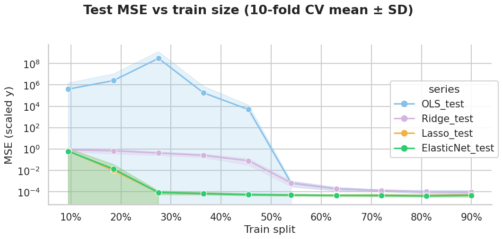
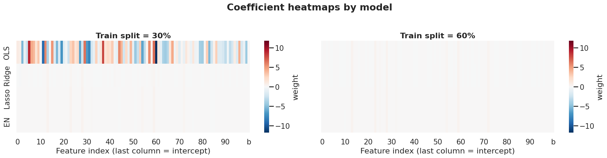
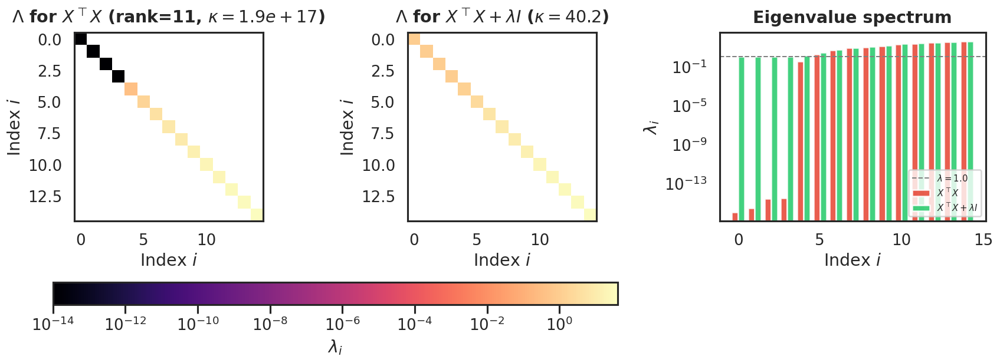
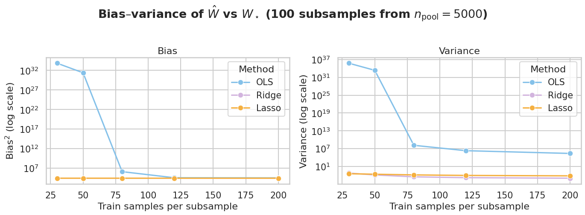

Regularized Linear Regression
Regularized Linear Regression
This notebook covers three regularized linear models:
- Ridge (\(L_2\) penalty)
- Lasso (\(L_1\) penalty)
- Elastic Net (\(L_1 + L_2\))
Regularization can be understood in two equivalent ways:
Bias–variance tradeoff
Unpenalized OLS can overfit when features are many or collinear. Adding a penalty shrinks the weights, which increases bias but often reduces variance and improves test error.
Prior on the weights
In a Bayesian view, the penalty corresponds to a prior on \(W\):
- Ridge → Gaussian prior on \(W\)
- Lasso → Laplace prior on \(W\)
Maximizing the posterior (MAP) is the same as minimizing loss + regularization in the frequentist picture.
These are two descriptions of the same idea: constrain \(W\) so the model generalizes better.
Setup
The basic linear regression model is that given a dataset \(\mathcal{D}=(X,Y)\) where \(X\in\mathbb{R}^{n\times d+1}\) and \(Y\in\mathbb{R}^{n\times m}\). The goal is to use a linear model \(W\in\mathbb{R}^{d+1 \times m}\) and predict the targets \(Y\) as \(Y=XW\).
The weights are chosen using the objective $$ \hat{W} = \underset{W}{\operatorname{argmin}} ||Y-XW||_2^2 $$
Ridge Regression
In the ridge regression model we assume a different objective function which is defined as $$ \hat{W} = \underset{W}{\operatorname{argmin}} ||Y-XW||_2^2 + \lambda ||W||_2^2 $$
Where, \(\lambda\) is a regularization parameter and \(||W||_2^2\) represents the \(L_2\) norm of the weights.
In a ridge regression model we penalize large values of slope and prefer smaller values of slope which minimizes the sum of squared residual errors.
LASSO Regression
In the LASSO regression model we assume a different objective function which is defined as $$ \hat{W} = \underset{W}{\operatorname{argmin}} ||Y-XW||_2^2 + \lambda ||W||_1 $$
Where, \(\lambda\) is a regularization parameter and \(||W||_1\) represents the \(L_1\) norm of the weights.
In a LASSO regression model we penalize large values of slope and prefer smaller values of slope which minimizes the sum of squared residual errors.
Elastic Net Regression
In the Elastic Net regression model we create a hybrid objective which incorporates both the Ridge and LASSO regression penalty. This objective is defined as
Here \(\lambda_1\) and \(\lambda_2\) represent the contributions of the Ridge and LASSO penalty to the objective function.
Questions
1. What is the difference between the Ridge and LASSO penalties? Both seem to penalize large slopes.
Ridge and LASSO use the same squared-error loss but encode different assumptions about the weights. Ridge corresponds to a Gaussian prior on \(W\), which shrinks coefficients smoothly toward zero. LASSO corresponds to a Laplace prior, which also shrinks coefficients but can set some of them exactly to zero, yielding sparse models.
2. Why do we need regularization at all? Why isn’t plain OLS enough?
To estimate \(d\) slopes plus an intercept, you ideally need at least \(n \geq d + 1\) samples. OLS has a unique solution only when that condition holds and \(X\) is full rank. When \(n < d\), or when predictors are redundant or nearly collinear, OLS becomes unstable or ill-defined.
In practice, data are often scarce and features overlap in what they explain. Unregularized OLS can then fit noise in the training set, giving high variance and weak test performance. Regularization penalizes large weights, down-weighting unhelpful features and often improving generalization.
Regularization also makes predictions less sensitive to small changes in the estimated weights, which reduces variance at the cost of some bias.
To illustrate these ideas, we next work through a small synthetic regression example.
import numpy as np
import pandas as pd
import seaborn as sns
import matplotlib.pyplot as plt
from matplotlib.ticker import PercentFormatter
from sklearn.datasets import make_regression
from sklearn.model_selection import ShuffleSplit
from sklearn.linear_model import RidgeCV, LassoCV, ElasticNetCV
from sklearn.preprocessing import StandardScaler
from matplotlib.gridspec import GridSpec
def mse(y_true, y_pred):
return np.mean((y_true - y_pred) ** 2)
# --- hard regime: n << p ---
n_samples = 200
n_informative = 10
n_features = 100
noise = 1.0
n_cv_folds = 10
X, y, trueW = make_regression(
n_samples=n_samples,
n_features=n_features,
n_informative=n_informative,
noise=noise,
random_state=42,
coef=True,
)
train_sizes = np.unique(
(n_samples * (1 - np.linspace(0.1, 0.9, 10))).astype(int)
)
rows = []
for n_train in train_sizes:
n_test = n_samples - n_train
cv = ShuffleSplit(
n_splits=n_cv_folds,
train_size=n_train,
test_size=n_test,
random_state=42,
)
for fold_idx, (tr_idx, te_idx) in enumerate(cv.split(X)):
X_tr, X_te = X[tr_idx], X[te_idx]
y_tr, y_te = y[tr_idx], y[te_idx]
x_scaler = StandardScaler().fit(X_tr)
y_scaler = StandardScaler().fit(y_tr.reshape(-1, 1))
X_tr_s = x_scaler.transform(X_tr)
X_te_s = x_scaler.transform(X_te)
y_tr_s = y_scaler.transform(y_tr.reshape(-1, 1)).ravel()
y_te_s = y_scaler.transform(y_te.reshape(-1, 1)).ravel()
X_tr_aug = np.hstack([X_tr_s, np.ones((X_tr_s.shape[0], 1))])
X_te_aug = np.hstack([X_te_s, np.ones((X_te_s.shape[0], 1))])
W_ols = np.linalg.inv(X_tr_aug.T @ X_tr_aug) @ X_tr_aug.T @ y_tr_s.reshape(-1, 1)
ridge = RidgeCV(alphas=np.logspace(-2, 3, 30), fit_intercept=False).fit(X_tr_aug, y_tr_s)
lasso = LassoCV(alphas=np.logspace(-3, 1, 30), fit_intercept=False, max_iter=20_000).fit(X_tr_aug, y_tr_s)
elastic = ElasticNetCV(
alphas=np.logspace(-3, 1, 30),
l1_ratio=[0.1, 0.5, 0.9],
fit_intercept=False,
max_iter=20_000,
).fit(X_tr_aug, y_tr_s)
rows += [
{"n_train": n_train, "train_frac": n_train / n_samples, "fold": fold_idx, "series": "OLS_test", "mse": mse(y_te_s, (X_te_aug @ W_ols).ravel())},
{"n_train": n_train, "train_frac": n_train / n_samples, "fold": fold_idx, "series": "Ridge_test", "mse": mse(y_te_s, ridge.predict(X_te_aug))},
{"n_train": n_train, "train_frac": n_train / n_samples, "fold": fold_idx, "series": "Lasso_test", "mse": mse(y_te_s, lasso.predict(X_te_aug))},
{"n_train": n_train, "train_frac": n_train / n_samples, "fold": fold_idx, "series": "ElasticNet_test", "mse": mse(y_te_s, elastic.predict(X_te_aug))},
]
df = pd.DataFrame(rows)
order = ["OLS_test", "Ridge_test", "Lasso_test", "ElasticNet_test"]
palette = {
"OLS_test": "#85c1e9",
"Ridge_test": "#d2b4de",
"Lasso_test": "#f5b041",
"ElasticNet_test": "#2ecc71",
}
sns.set_theme(style="whitegrid", context="talk", font_scale=0.9)
g = sns.relplot(
data=df, x="train_frac", y="mse", hue="series",
hue_order=order, palette=palette,
kind="line", marker="o", errorbar="sd",
height=5, aspect=1.7,
)
g.set_axis_labels("Train split", "MSE (scaled y)")
g.ax.xaxis.set_major_formatter(PercentFormatter(1.0))
g.ax.set_yscale("log")
g.fig.suptitle(
f"Test MSE vs train size ({n_cv_folds}-fold CV mean ± SD)",
y=1.02, weight="semibold",
)
sns.move_legend(g, "center right", frameon=True, framealpha=0.9)
plt.tight_layout()
plt.show()

In the above plot we use a synthetic example to generate an example to illustrate the conditions under which regularization is important. As discussed previously, the OLS soln is not robust when a) The features are correlated OR in other words redundant b) The matrix \(X^TX\) is rank deficient \(\rightarrow\) \(n\leq d\).
We simulate this by using the "make_regression" function and keeping the total features \(d=100\) with the actual informative features as \(10\). We further sweep the train test split from \(10\%\) to \(90\%\) and analyze the quality of the fit for OLS, Ridge and LASSO regression models.
The MSE is plotted along with the STD with \(10\) fold cross-validation. As can be inferred from the plot, For train-split \(< 50\%\) the MSE of the OLS regression blows up significantly compared to Ridge and LASSO regression objectives. As the train-split increases more than \(50\%\) the MSE converges for the 3 models.
Additionally, the ElasticNet model is also added for completion. The elastic net chooses the weight penalty coefficients close to the LASSO regression model which makes it use the best of both worlds.
def fit_model_weights(X, y, train_frac, random_state=42):
n_samples = X.shape[0]
n_train = int(round(n_samples * train_frac))
n_test = n_samples - n_train
splitter = ShuffleSplit(
n_splits=1, train_size=n_train, test_size=n_test, random_state=random_state
)
tr_idx, _ = next(splitter.split(X))
X_tr, y_tr = X[tr_idx], y[tr_idx]
x_scaler = StandardScaler().fit(X_tr)
y_scaler = StandardScaler().fit(y_tr.reshape(-1, 1))
X_tr_s = x_scaler.transform(X_tr)
y_tr_s = y_scaler.transform(y_tr.reshape(-1, 1)).ravel()
X_tr_aug = np.hstack([X_tr_s, np.ones((X_tr_s.shape[0], 1))])
W_ols = np.linalg.inv(X_tr_aug.T @ X_tr_aug) @ X_tr_aug.T @ y_tr_s.reshape(-1, 1)
ridge = RidgeCV(alphas=np.logspace(-2, 3, 30), fit_intercept=False).fit(X_tr_aug, y_tr_s)
lasso = LassoCV(alphas=np.logspace(-3, 1, 30), fit_intercept=False, max_iter=20_000).fit(X_tr_aug, y_tr_s)
elastic = ElasticNetCV(
alphas=np.logspace(-3, 1, 30),
l1_ratio=[0.1, 0.5, 0.9],
fit_intercept=False,
max_iter=20_000,
).fit(X_tr_aug, y_tr_s)
return {
"OLS": W_ols.ravel(),
"Ridge": ridge.coef_,
"Lasso": lasso.coef_,
"EN": elastic.coef_,
}
model_order = ["OLS", "Ridge", "Lasso", "EN"]
train_fracs = [0.3, 0.6]
n_features = X.shape[1]
xtick_labels = [str(i) if i % 10 == 0 else "" for i in range(n_features)] + ["b"]
fig, axes = plt.subplots(1, 2, figsize=(18, 4.5), sharey=True)
vmax = 0.0
weight_mats = []
for frac in train_fracs:
w_dict = fit_model_weights(X, y, frac)
W = np.vstack([w_dict[m] for m in model_order])
weight_mats.append(W)
vmax = max(vmax, np.abs(W).max())
for ax, frac, W in zip(axes, train_fracs, weight_mats):
sns.heatmap(
W,
ax=ax,
cmap="RdBu_r",
center=0,
vmin=-vmax,
vmax=vmax,
yticklabels=model_order,
xticklabels=xtick_labels,
cbar_kws={"label": "weight"},
)
ax.set_title(f"Train split = {frac:.0%}", weight="semibold")
ax.set_xlabel("Feature index (last column = intercept)")
fig.suptitle("Coefficient heatmaps by model", y=1.02, weight="semibold")
plt.tight_layout()
plt.show()

In the above plot we can observe that, when the \(X\) is rank deficient, that is the no of datapoints \(n\) is less than the number of features \(d\) the OLS solution leads to large weight matrix which can be seen by the bright colors. This is a sign of overfitting to the train data.
The regularized solution on the other hands shrink the weight towards zero as can be seen by the almost faded color pallete.
MAP derivation of Ridge and Lasso
Ridge and Lasso objectives follow from a maximum a posteriori (MAP) estimate of the weights. Assume a Gaussian noise model for the targets and place a prior on \(W\):
Terms that do not depend on \(W\) (normalizing constants) are dropped below; we write \(\propto\) or “\(=\)” when equality is meant up to an additive constant in \(-\log p(\cdot)\).
Likelihood (Gaussian errors). For i.i.d. observations,
Taking the negative log-likelihood (up to constants),
Ridge prior (Gaussian on \(W\)). A zero-mean Gaussian prior,
implies
Combining likelihood and prior,
which is the Ridge objective. The factor \(1/(2\sigma^2)\) on the residual term only rescales \(\lambda\) and does not change the optimizer.
Lasso prior (Laplace on \(W\)). A zero-mean Laplace (double-exponential) prior,
implies
Hence
which is the Lasso objective. As with Ridge, constants and the noise variance \(\sigma^2\) are absorbed into the effective penalty strength and are omitted because they do not affect the location of the minimum.
Ridge Regression Closed Form Solution
The LASSO objective is non-differentiable and thus does not have a closed form solution and has to be solved using gradient descent or other numerical methods. The ridge objective however, is differentiable and can be solved into a closed form expression. In this section we will derive the same:
Let us consider the MAP objective for the ridge regression from above. Then we have,
Taking derivative and evaluation to zero we get $$ 0 = -2X^T(Y-XW)+2\lambda W $$ $$ X^TY =X^TXW+\lambda W\ X^TY = (X^TX+\lambda I)W\ \hat{W}_{Ridge} = (X^TX+\lambda I)^{-1}X^TY $$
\(\hat{W}_{Ridge}\) looks almost similar to the OLS estimate expect for an additional \(\lambda I\) term. Let us now see why this \(\lambda I\) term makes a world of difference using a syntheic example with the design matrix being rank deficient due to linear dependence amongst columns.
import numpy as np
import matplotlib.pyplot as plt
import seaborn as sns
from sklearn.datasets import make_regression
from sklearn.preprocessing import StandardScaler
# n < d => X^T X is rank-deficient (here n_features = n_informative)
n_samples = 12
n_informative = 15
n_features = n_informative
ridge_lambda = 1.0
X, y, _ = make_regression(
n_samples=n_samples,
n_features=n_features,
n_informative=n_informative,
noise=1.0,
random_state=42,
coef=True,
)
X = StandardScaler().fit_transform(X)
XtX = X.T @ X
XtX_ridge = XtX + ridge_lambda * np.eye(n_features)
evals_ols = np.linalg.eigvalsh(XtX)
evals_ridge = np.linalg.eigvalsh(XtX_ridge)
rank_ols = np.linalg.matrix_rank(XtX)
kappa_ols = np.linalg.cond(XtX)
kappa_ridge = np.linalg.cond(XtX_ridge)
from matplotlib.colors import LogNorm
from matplotlib.cm import ScalarMappable
W_inv_ridge = np.linalg.inv(XtX_ridge) # exists when λ > 0
evals_ols_plot = np.maximum(evals_ols, 1e-15)
Lambda_ols = np.diag(evals_ols_plot)
Lambda_ridge = np.diag(evals_ridge)
# shared log scale: linear 0–40 hides the +λ lift on near-zero modes
vmin_log = 1e-14
vmax_log = max(evals_ols.max(), evals_ridge.max())
norm = LogNorm(vmin=vmin_log, vmax=vmax_log)
sns.set_theme(style="white", context="talk", font_scale=0.95)
fig = plt.figure(figsize=(17, 5.0), dpi=120)
gs = fig.add_gridspec(
2, 3,
height_ratios=[1, 0.12],
width_ratios=[1, 1, 1.15],
hspace=0.58,
wspace=0.42,
)
ax0 = fig.add_subplot(gs[0, 0])
ax1 = fig.add_subplot(gs[0, 1])
ax2 = fig.add_subplot(gs[0, 2])
cax = fig.add_subplot(gs[1, :2])
titles = [
rf"$\Lambda$ for $X^\top X$ (rank={rank_ols}, $\kappa={kappa_ols:.1e}$)",
rf"$\Lambda$ for $X^\top X + \lambda I$ ($\kappa={kappa_ridge:.1f}$)",
]
for ax, mat, title in zip([ax0, ax1], [Lambda_ols, Lambda_ridge], titles):
ax.imshow(mat, cmap="magma", norm=norm, aspect="equal")
ax.set_title(title, weight="semibold", pad=10)
ax.set_xlabel("Index $i$")
ax.set_ylabel("Index $i$")
fig.colorbar(
ScalarMappable(norm=norm, cmap="magma"),
cax=cax,
orientation="horizontal",
label=r"$\lambda_i$",
)
x_idx = np.arange(n_features)
ax2.bar(x_idx - 0.2, np.maximum(evals_ols, 1e-16), width=0.4, label=r"$X^\top X$", color="#e74c3c", alpha=0.9)
ax2.bar(x_idx + 0.2, evals_ridge, width=0.4, label=r"$X^\top X + \lambda I$", color="#2ecc71", alpha=0.9)
ax2.axhline(ridge_lambda, color="gray", ls="--", lw=1.2, label=rf"$\lambda={ridge_lambda}$")
ax2.set_yscale("log")
ax2.set_xlabel("Index $i$")
ax2.set_ylabel(r"$\lambda_i$")
ax2.set_title("Eigenvalue spectrum", weight="semibold", pad=10)
ax2.legend(frameon=True, fontsize=9, loc="lower right")
plt.show()
print(f"rank(X^T X) = {rank_ols} (< d={n_features})")
print(f"cond(X^T X) = {kappa_ols:.4e} | cond(X^T X + λI) = {kappa_ridge:.2f}")
print(f"λ_min: OLS {evals_ols.min():.2e} | Ridge {evals_ridge.min():.4f}")

rank(X^T X) = 11 (< d=15)
cond(X^T X) = 1.9385e+17 | cond(X^T X + λI) = 40.17
λ_min: OLS -5.08e-15 | Ridge 1.0000
Interpretation
What is the condition number?
For a symmetric positive semi-definite matrix such as \(X^\top X\), the condition number is
where \(\lambda_{\max}\) and \(\lambda_{\min}\) are the largest and smallest non-zero eigenvalues (in practice, the smallest eigenvalue in floating point, which may be slightly negative due to roundoff).
\(\kappa\) measures how ill-conditioned inversion is:
- Small \(\kappa\) — eigenvalues are comparable in size; multiplying by \((X^\top X)^{-1}\) does not wildly amplify noise.
- Large \(\kappa\) — a few directions in feature space are almost flat and others are steep; the inverse is numerically unstable and coefficient estimates can explode.
Results from this example (\(n = 12\), \(d = 15\), \(\lambda = 1\))
rank(X^T X) = 11 (< d=15)
cond(X^T X) = 1.9385e+17 | cond(X^T X + λI) = 40.17
λ_min: OLS -5.08e-15 | Ridge 1.0000
Rank. With only 12 samples and 15 features, \(X^\top X\) cannot have full rank. Here \(\mathrm{rank}(X^\top X) = 11 < d = 15\), so the normal equations \((X^\top X)W = X^\top Y\) do not have a unique solution and \((X^\top X)^{-1}\) is not well-defined.
Condition number. \(\kappa(X^\top X) \approx 1.9 \times 10^{17}\) is enormous: the smallest eigenvalue is effectively zero (\(\lambda_{\min} \approx -5 \times 10^{-15}\) from numerical error) while larger eigenvalues are \(\mathcal{O}(1)\)–\(\mathcal{O}(10)\). Inverting \(X^\top X\) amplifies errors by roughly \(10^{17}\) in the worst direction.
Minimum eigenvalue after Ridge. Adding \(\lambda I\) shifts every eigenvalue upward by \(\lambda\). The smallest becomes \(\lambda_{\min}(X^\top X + \lambda I) = 1.0\), and \(\kappa\) drops to about 40. The matrix is full rank and invertible.
The heatmaps and bar chart show the same story: the first few modes of \(X^\top X\) are near zero (black on the log-scale \(\Lambda\) plot, red bars at \(10^{-14}\)), while after Ridge those modes are lifted to at least \(\lambda = 1\) (green bars on the dashed line).
Main takeaway: why Ridge helps here
The closed-form Ridge estimator uses \((X^\top X + \lambda I)^{-1}\) instead of \((X^\top X)^{-1}\). Under rank-deficient or collinear designs (\(n \le d\) or redundant columns), OLS relies on a matrix that is singular or nearly singular. Ridge regularizes the geometry of the problem by:
- Making \(X^\top X + \lambda I\) positive definite (hence invertible) for any \(\lambda > 0\).
- Bounding the condition number, so coefficient estimates are less sensitive to small perturbations in \(X\) or \(y\).
- Implementing the same idea as the Gaussian prior in the MAP derivation: prefer smaller weights unless the data strongly demand otherwise.
So the main advantage in this setting is not merely “smaller weights,” but a stable, well-posed linear system where OLS would be undefined or numerically unreliable.
Bias–variance tradeoff
We study how OLS, Ridge, and Lasso trade bias against variance when the design matrix is high-dimensional and collinear.
Data generating process
- Draw a large pool (\(n_{\mathrm{pool}} = 5000\)) from
make_regressionwith \(d_0 = 10\) informative features. - Append redundant columns (scaled copies of informative features) and pure noise columns; extend the true coefficient vector with zeros on non-informative features.
- For each train size \(n_{\mathrm{train}}\), draw many random subsamples from the pool (without replacement), fit each method, and record \(\hat W\).
Bias–variance decomposition (weights)
With known \(W_\star\) from make_regression, over \(R\) subsample replicates:
where \(\mathbb{E}[\cdot]\) is approximated by the sample mean across replicates. Regularization should increase bias but reduce variance relative to OLS, especially when \(n_{\mathrm{train}}\) is small.
import numpy as np
import pandas as pd
import seaborn as sns
import matplotlib.pyplot as plt
from sklearn.datasets import make_regression
from sklearn.linear_model import Ridge, Lasso
from sklearn.preprocessing import StandardScaler
rng = np.random.default_rng(42)
# --- large population ---
n_pool = 5_000
n_informative = 10
n_redundant = 30
n_pure_noise = 40
ridge_alpha = 1.0
lasso_alpha = 0.05
X_pool, y_pool, W_true_base = make_regression(
n_samples=n_pool,
n_features=n_informative,
n_informative=n_informative,
noise=1.0,
random_state=42,
coef=True,
)
src_idx = rng.integers(0, n_informative, size=n_redundant)
scales = rng.uniform(0.05, 1.0, size=n_redundant)
X_redundant = X_pool[:, src_idx] * scales
X_pure = rng.normal(size=(n_pool, n_pure_noise))
X_pool = np.hstack([X_pool, X_redundant, X_pure])
W_star = np.concatenate([W_true_base, np.zeros(n_redundant + n_pure_noise)])
p_features = X_pool.shape[1]
def fit_weights(X_tr, y_tr, method):
x_scaler = StandardScaler().fit(X_tr)
y_scaler = StandardScaler().fit(y_tr.reshape(-1, 1))
X_s = x_scaler.transform(X_tr)
y_s = y_scaler.transform(y_tr.reshape(-1, 1)).ravel()
X_aug = np.hstack([X_s, np.ones((X_s.shape[0], 1))])
if method == "OLS":
W = np.linalg.inv(X_aug.T @ X_aug) @ X_aug.T @ y_s.reshape(-1, 1)
return W.ravel()[:-1]
if method == "Ridge":
return Ridge(alpha=ridge_alpha, fit_intercept=False).fit(X_aug, y_s).coef_[:-1]
if method == "Lasso":
return Lasso(alpha=lasso_alpha, fit_intercept=False, max_iter=20_000).fit(X_aug, y_s).coef_[:-1]
raise ValueError(method)
train_sizes = [30, 50, 80, 120, 200]
n_repeats = 100
models = ["OLS", "Ridge", "Lasso"]
rows = []
for n_train in train_sizes:
for method in models:
W_hats = np.zeros((n_repeats, p_features))
for rep in range(n_repeats):
idx = rng.choice(n_pool, size=n_train, replace=False)
W_hats[rep] = fit_weights(X_pool[idx], y_pool[idx], method)
W_mean = W_hats.mean(axis=0)
bias_sq = np.sum((W_mean - W_star) ** 2)
variance = np.mean(np.sum((W_hats - W_mean) ** 2, axis=1))
rows.append({
"n_train": n_train,
"method": method,
"bias_sq": bias_sq,
"variance": variance,
"mse_weights": bias_sq + variance,
})
df_bv = pd.DataFrame(rows)
palette = {"OLS": "#85c1e9", "Ridge": "#d2b4de", "Lasso": "#f5b041"}
sns.set_theme(style="whitegrid", context="talk", font_scale=0.9)
fig, axes = plt.subplots(1, 2, figsize=(14, 5), sharex=True)
sns.lineplot(
data=df_bv, x="n_train", y="bias_sq", hue="method",
marker="o", palette=palette, ax=axes[0],
)
axes[0].set_yscale("log")
axes[0].set_xlabel("Train samples per subsample")
axes[0].set_ylabel(r"Bias$^2$ (log scale)")
axes[0].set_title("Bias")
axes[0].legend(title="Method")
sns.lineplot(
data=df_bv, x="n_train", y="variance", hue="method",
marker="o", palette=palette, ax=axes[1],
)
axes[1].set_yscale("log")
axes[1].set_xlabel("Train samples per subsample")
axes[1].set_ylabel("Variance (log scale)")
axes[1].set_title("Variance")
axes[1].legend(title="Method")
fig.suptitle(
f"Bias–variance of $\\hat W$ vs $W_\\star$ ({n_repeats} subsamples from $n_\\mathrm{{pool}}={n_pool}$)",
y=1.02,
weight="semibold",
)
plt.tight_layout()
plt.show()
df_bv.pivot_table(index="n_train", columns="method", values="mse_weights").round(3)

| method | Lasso | OLS | Ridge |
|---|---|---|---|
| n_train | |||
| 30 | 26434.905 | 6.047464e+35 | 26619.754 |
| 50 | 26424.198 | 2.399517e+33 | 26601.384 |
| 80 | 26419.166 | 1.260461e+08 | 26597.551 |
| 120 | 26416.477 | 1.940100e+06 | 26596.104 |
| 200 | 26413.653 | 2.578167e+05 | 26596.240 |
Interpretation
The table above is total weight error \(\|\mathbb{E}[\hat W] - W_\star\|^2 + \mathbb{E}\|\hat W - \mathbb{E}[\hat W]\|^2\) (bias² + variance) for Lasso, OLS, and Ridge (columns in alphabetical order). With \(p = 80\) features and \(n_{\mathrm{train}} \in \{30,\ldots,200\}\), several points stand out.
OLS — variance dominates when \(n_{\mathrm{train}} \ll p\)
- At \(n_{\mathrm{train}} = 30\) and \(50\), OLS weight MSE is on the order of \(10^{35}\)–\(10^{33}\). The subsampled design is rank-deficient / ill-conditioned (\(n < p\), plus redundant columns), so \(\hat W = (X^\top X)^{-1} X^\top y\) is unstable: small changes in which rows are drawn produce wildly different \(\hat W\).
- As \(n_{\mathrm{train}}\) grows (\(80 \to 200\)), OLS MSE falls sharply (\(\sim 10^8 \to 2.6 \times 10^5\)). More rows stabilize \(X^\top X\), but even at \(n = 200\) we still have \(n < p\), so error remains large compared with regularized fits.
- On the plots, OLS bias² is also huge at very small \(n\) (the mean \(\hat W\) over replicates is far from \(W_\star\)), then drops toward \(\sim 10^4\)–\(10^6\) as \(n\) increases; variance tracks the same story and is the main driver of the table entries at \(n = 30, 50\).
Ridge and Lasso — bias–variance tradeoff in practice
- For all train sizes, Ridge and Lasso sit near \(\sim 2.6 \times 10^4\) total weight MSE—orders of magnitude below OLS when \(n\) is small.
- Their bias² is slightly higher than the “floor” of \(\sim 10^4\) (shrinking or zeroing coefficients pulls \(\mathbb{E}[\hat W]\) away from the true sparse \(W_\star\) on noise/redundant coordinates), but that cost is small and stable across \(n_{\mathrm{train}}\).
- Variance stays near \(\sim 10^4\) (flat lines on the log plot): penalization dampens sensitivity to subsampling and collinearity. We buy a modest, fixed increase in bias for a large cut in variance.
Takeaway
This is the bias–variance tradeoff in coefficient space: unregularized OLS in a high-dimensional, collinear setting has low bias in principle but enormous variance when \(n_{\mathrm{train}}\) is small—so weight MSE is terrible. Ridge (\(\lambda=1\)) and Lasso (\(\alpha=0.05\)) accept a small, steady bias penalty and keep variance bounded, which is why their total weight error stays flat near \(2.6 \times 10^4\) while OLS error spans many orders of magnitude. As \(n_{\mathrm{train}}\) increases, OLS improves but regularized methods remain preferable until \(n\) is large enough relative to \(p\) and conditioning of \(X\).
Conclusion
What we learned
- Ridge, Lasso, and Elastic Net add an \(L_2\), \(L_1\), or mixed penalty to squared loss; tuning \(\lambda\) (or \(\alpha\)) controls how strongly weights are shrunk.
- The same objective can be read as MAP estimation (Gaussian prior → Ridge, Laplace → Lasso) or as a bias–variance tradeoff: a bit more bias, much less variance when \(p\) is large or features are collinear.
- Ridge has a closed form \(\hat W = (X^\top X + \lambda I)^{-1} X^\top y\); adding \(\lambda I\) lifts small eigenvalues of \(X^\top X\) and stabilizes the fit when \(X^\top X\) is rank-deficient or ill-conditioned.
- On noisy, redundant high-dimensional data, OLS can match or beat regularized methods on training error but generalizes worse; regularized models often win on test MSE and produce stabler coefficients across train sizes and subsamples.
- A direct bias–variance decomposition of \(\hat W\) vs \(W_\star\) showed that OLS variance explodes when \(n_{\mathrm{train}} \ll p\), while Ridge and Lasso keep total weight error flat and small by trading a modest, stable bias for bounded variance.
When to use Ridge vs Lasso vs Elastic Net
Use Ridge when many features are correlated or \(n\) is not much larger than \(p\): you want smooth shrinkage of all coefficients, stable predictions, and you do not need strict sparsity. Use Lasso when you believe only a small subset of features matter—\(L_1\) can zero out irrelevant weights and aids interpretation, but correlated predictors may get arbitrary splits among them. Use Elastic Net when you need both: sparsity from Lasso plus the grouping / stability of Ridge among correlated features (common default when \(p \gg n\) or features are highly collinear). In practice, pick the penalty strength with cross-validation on held-out error; standardize features and avoid penalizing the intercept unless you have a deliberate reason not to.